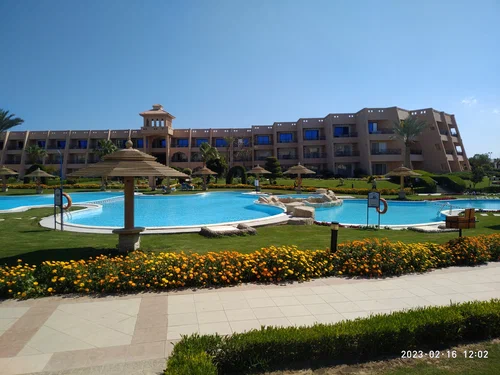
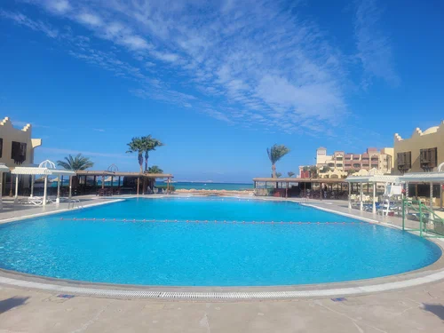
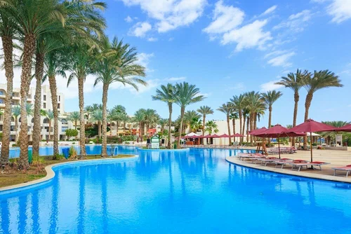

| 
Курортный отель Jasmine Palace с 7 открытыми бассейнами и частным пляжем расположен в Хургаде. В местах общего пользования работает Wi-Fi. Курортный отель находится в 15,6 км от Новой пристани для яхт и в 18,1 км от острова Гифтун.В каждом номере есть выход на балкон с видом на бассейн или сад. В номерах имеются телевизор с плоским экраном, кондиционер и мини-бар. Собственная ванная комната оборудована ванной или душем.В 5 ресторанах курортного отеля подают разнообразные блюда местной и интернациональной кухни. Напитки и закуски подаются в 6 барах, где также проводятся вечерние развлекательные программы.По запросу можно поиграть в бильярд и заняться водными видами спорта. За дополнительную плату предоставляются услуги массажа.Расстояние до международного аэропорта Хургады составляет 12 км. На прилегающей территории обустроена бесплатная частная парковка. |
| 
Оживленный курорт Sunny Days El Palacio Resort & Spa расположен на побережье Красного моря. Курорт предлагает проживание по системе "все включено". На курорте имеются пляжи с белым песком, озелененные бассейны. Вы также можете заняться дайвингом в лагуне и у кораллового рифа близ отеля.Просторные номера отеля Sunny Days El Palacio Resort & Spa имеют собственный балкон или террасу с видом на море. Во всех номерах есть спутниковое телевидение и кондиционер.Отель Sunny Days предлагает широкий выбор ресторанов и баров на территории отеля, в том числе обильный "шведский стол" с блюдами международной кухни, итальянский ресторан, а также ресторан, где предлагают блюда из морепродуктов и где вы можете насладиться видом на море.Удобства для активного отдыха включают пляжный волейбол, водное поло, а также полностью оборудованный фитнес-центр. Отель также имеет свой собственный центр водных видов спорта, где вы можете заняться дайвингом, виндсерфингом и парусным спортом.В отеле Sunny Days есть торговая галерея с более чем 42 магазинами на любой вкус, а также интернет-кафе и парикмахерская.Отель Sunny Days El Palacio Resort & Spa расположен в 9 км от международного аэропорта Хургады и в 3 км от центра Хургады. |
| 
Пятизвездочный курортный отель, расположенный в районе Шаркс-Бей, окружен большим тропическим садом с водопадами и пальмами. К услугам гостей частный пляж, огромный бассейн в форме лагуны, спа-центр и номера с отдельным балконом.Светлые просторные номера курортного спа-отеля Grand Rotana обставлены современной мебелью. В числе удобств - спутниковое телевидение и бесплатные принадлежности для чая/кофе. Из номеров открывается вид на сад, бассейн или Красное море.В распоряжении гостей гидромассажная ванна и сауна в спа-центре отеля Grand Rotanas, теннисные корты и тренажерный зал с кардиотренажерами и свободными весами. Также гости могут поплавать в огромном открытом бассейне размером с 3 олимпийских бассейна.В ресторане Mezzaluna с живописным видом на Красное море подают фирменные итальянские блюда, в ресторане Silk Road - блюда восточной и западной кухни. В многочисленных барах можно заказать экзотические коктейли.Поездка до аэропорта Шарм-эль-Шейх и залива Наама занимает 15 минут, до площади Сохо - 10 минут. По запросу гостям предоставляется бесплатный трансфер до залива Наама. |